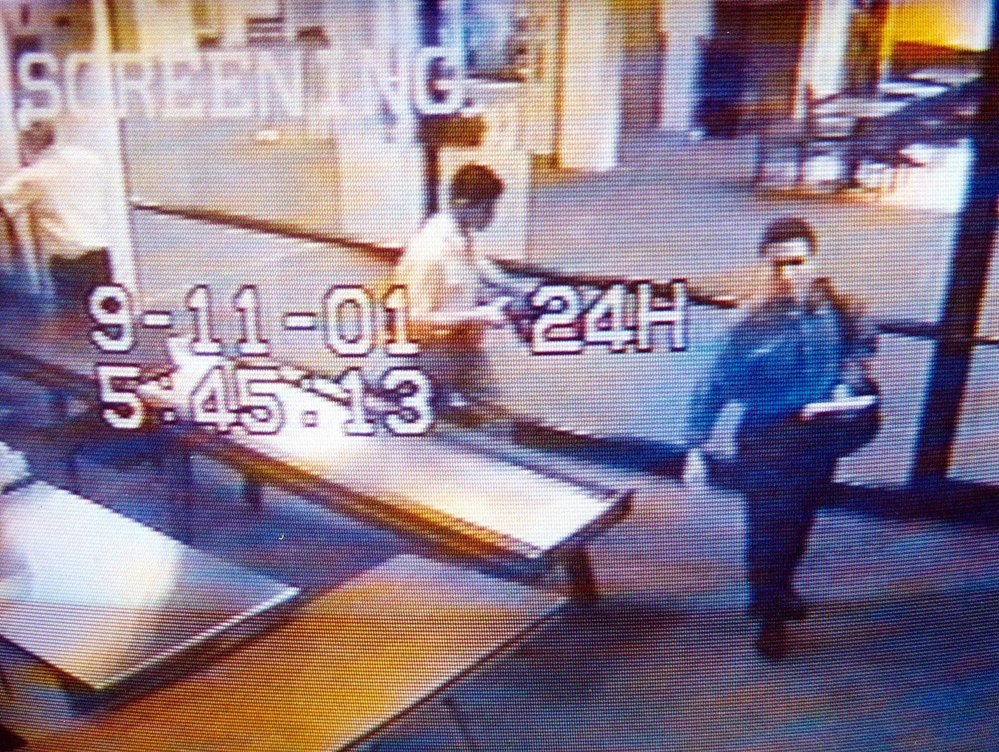
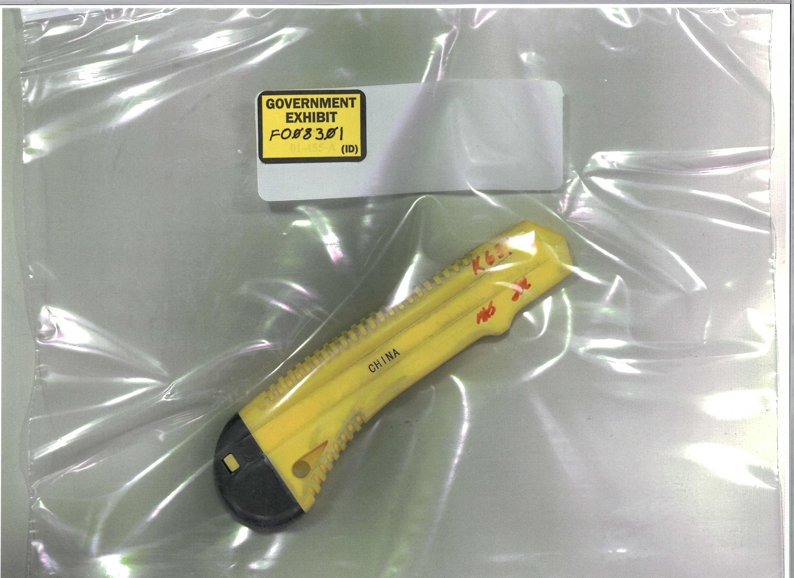

9·11 테러 25주기,
작은 확인이 항공보안의 시작입니다.
2001년 9월 11일 비극의 역사로부터 25년이 지난 오늘, 인천국제공항을 비롯한 전 세계 항공 현장은 첨단 3D CT 검색기와 AI 솔루션으로 무장하고 있습니다. 그러나 보안의 최후의 보루는 결국 현장에 있습니다. BGR 기기 앞에서 승객 한 분, 한 분을 확인하는 바로 당신의 세심한 관찰과 신속한 후속 조치가 항공보안을 지키는 마지막 방어선입니다.
SECTION 1: 기억과 추모, 25년이 지난 오늘
2026년 9월 11일, 미국 뉴욕 그라운드 제로와 펜타곤, 펜실베이니아 샹크스빌에서는 9·11 테러 25주기를 맞이하는 공식 추모식이 거행되었습니다. 25년이라는 세월이 흘렀지만, 그날의 비극이 전 세계 항공업계와 우리의 일상에 남긴 충격은 여전히 선명합니다.
2,983명의 희생자를 기리는 묵념 소리 속에서, 특히 25주기 행사인 올해는 기존 6회의 묵념 외에 현장 수습 및 복구 과정에서 유독물질 노출로 사망한 이들을 기리는 7번째 묵념이 새로 추가되었습니다. 항공보안 종사자들이 가슴 깊이 새겨야 할 명제는 바로 "안전은 타협할 수 없는 최우선 가치"라는 사실입니다.
SECTION 2: 4개 항공편이 남긴 보안의 과제
2001년 9월 11일 아침, 19명의 테러범은 미국 동부의 주요 공항에서 4대의 여객기에 나눠 탑승했습니다. 보스턴에서 출발한 아메리칸 11편과 유나이티드 175편, 워싱턴에서 출발한 아메리칸 77편, 뉴어크에서 출발한 유나이티드 93편은 불과 수십 분 사이에 국가적 재앙의 도구로 변모했습니다.

SECTION 3: 이상징후는 있었지만, 연결되지 않았다
워싱턴 덜레스 공항에서 아메리칸 77편에 탑승한 알하즈미(Hazmi) 형제의 사례는 오늘날 지상직 직원들에게 매우 중요한 교훈을 줍니다. 수속 당시 항공사 카운터 직원들은 승객의 신분증 미비, 언어 소통 불통, 의심스러운 행동을 인지하고 이들을 직접 '추가 확인 대상(Extra Scrutiny)'으로 지정했습니다. 보안검색대에서도 문형 금속탐지기 경보가 두 차례 발생하여 휴대용 금속 탐지기 및 폭발물 흔적 검사가 수행되었습니다.
그러나 당시의 시스템은 카운터에서 발견된 이상징후를 정보기관의 테러위협 정보와 연결하지 못했고, 체크인 단계에서의 위험 지정 역시 검색대의 정밀 신체 수색으로 유기적으로 이어지지 않았습니다. 하나의 이상징후가 개별적인 조치에 그치고, 이를 전체 보안망의 정보로 연결하지 못했을 때 어떤 결과가 초래될 수 있는지, 9·11 테러는 극명하게 보여주고 있습니다.
SECTION 4: 작은 위해물품이 보여준 보안의 허점
당시 테러범들이 사용한 것으로 알려진 박스커터는 당시 FAA 법적 금지 품목(날 길이 4인치 이상)에 직접 해당하지 않았으며, 지침서(COG)상 제한 물품으로 분류되어 있었습니다. 검색 장비는 대형 총기 위주로 맞춰져 있었고, "작은 칼 하나쯤이야"라는 당대의 느슨한 인식이 결합하여 시스템 전체의 허점을 만들어냈습니다.

⚠️ 주의: 9/11 테러 당일 항공기 내에서 실제 활용한 실물이라고 사진만으로 단정할 수 없으며, 공범 무사위 재판에서 유사 범행 도구의 정황 입증을 위해 제출된 법정 전시물입니다.
자카리아스 무사위 재판에 제출된 법정 증거물(FO08301) 속 노란색 박스커터는 우리에게 말해줍니다. 규정의 허점과 현장의 방심이 결합할 때, 아주 작고 일상적인 물건조차 치명적인 위해 도구가 될 수 있다는 사실을 말합니다.
SECTION 5: 항공보안 현장 실무자가 지켜야 할 철학
오늘날 공항 현장은 AI 판독 장비와 3D CT 검색기 등 첨단 기술로 무장하고 있습니다. 하지만 보안의 최후의 보루는 여전히 사람, 즉 현장에서 승객을 맞이하고 수속을 처리하는 지상직 직원 여러분입니다. 아래 핵심 행동 수칙을 클릭하여 상세 지침을 확인하십시오.
체크인 카운터 신원 확인의 철저성
승객의 사진 신분증 불일치, 서류 미비, 언어 소통 거부 등 미세한 이상징후를 무심코 넘기지 마십시오.
💡 실무 가이드
• 여권 및 신분증 사진과 실물 대조 필수• 발권 과정에서의 태도 이상 및 불안 징후 메모
• 업무 지연 방지보다 안전 확인이 우선
이상징후 인지 시 정밀 확인 및 에스컬레이션
카운터나 안내대에서 이상징후가 감지되면 즉시 상급자 및 보안 담당 부서에 보고하십시오.
💡 실무 가이드
• 지침에 따른 신속한 보고 체계 가동• 보안팀과의 즉각적인 정보 공유
• 단독 판단으로 상황 종료 금지
추가검색 후속 조치 매칭의 완결성
금속탐지기 경보 발생 시 휴대형 금속 탐지기, ETD 검사 등 2차 추가검색이 원인 해소까지 완벽히 수행되었는지 확인하십시오.
💡 실무 가이드
• 경보 발생 원인의 철저한 규명• 수하물 개장검사 및 흔적 탐지 완결
• 절차 누락 여부 최종 점검
단계 간 정보 공유 및 연계(Connectivity)
체크인 단계의 위험 인자가 검색대 및 탑승구(Gate) 단계까지 끊김 없이 전달되어야 합니다.
💡 실무 가이드
• 부서 간 사각지대 없는 정보 연계• 탑승구 직전 최종 확인 프로세스 준수
• 작은 특이사항도 철저히 인계
"9·11이 우리에게 남긴 가장 준엄한 교훈은, 체크인 카운터와 검색대에서 발견한 작은 이상징후 하나라도 가볍게 넘기지 않고 끝까지 확인하는 것입니다. 현장의 작은 의심과 신중한 확인이 수백 명의 승객의 생명과 항공안전을 지키는 첫 번째 방어선이 될 수 있습니다."